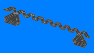

Building Floating Artificial Reefs (FARs)
The Basic SPAR
 The SPAR
The SPAR
This is the major source of buoyancy for FARs or islands, with a rigid foam interior covered with a layer of flexible foam and a tough outer skin
The Basic CORNER
 The CORNER
The CORNER
Also buoyant and with the same structure as the SPAR, CORNERs are used to join SPARs together at angles of 60 or 120 degrees to create a variety of designs
SPARs and CORNERs
 SPARs and CORNERs
SPARs and CORNERs
SPARs can be combined with CORNERs to create rings, zigzags and many other structures
Floating Artificial Reef
 FARFARs can be designed to resist wave and storm damage to themselves as well as protect sections of coastline or coastal facilities such as harbours